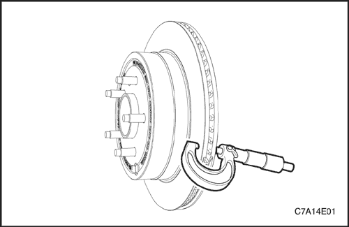
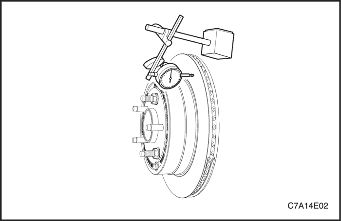
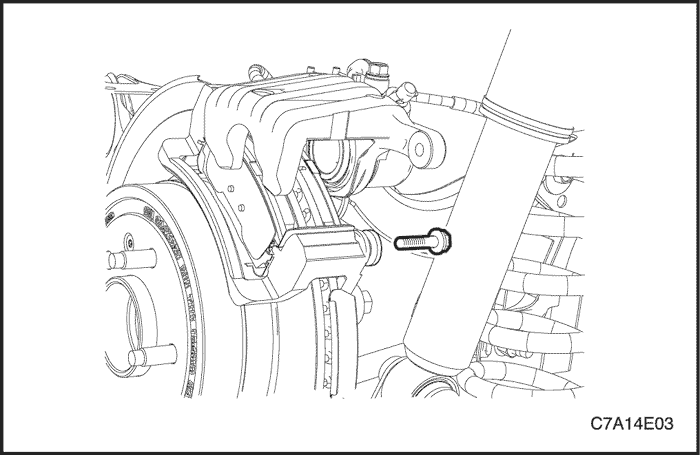
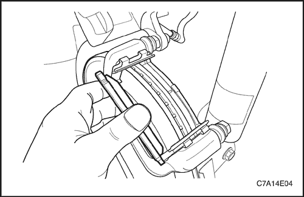
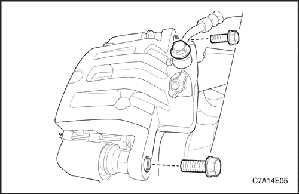
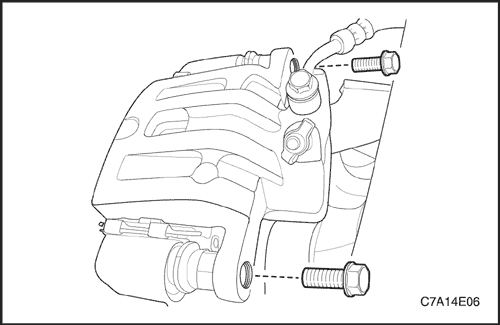
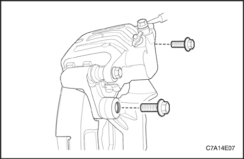
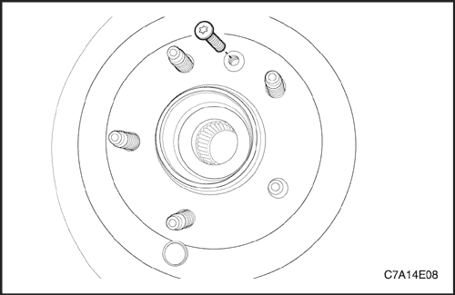
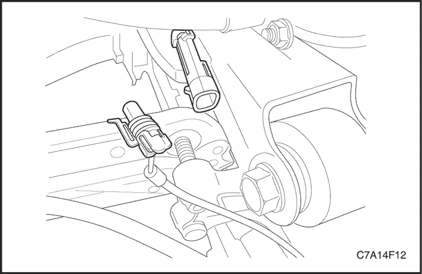
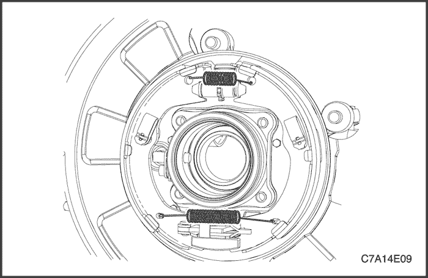

SECCIÓN 4E
FRENOS TRASEROS
ESPECIFICACIONES
Especificaciones generales
| Aplicación | Valor(es) |
| discos de los frenos delanteros | Diámetro | 303 mm |
| Espesor | 20 mm |
| Espesor de descarte | 18.4 |
| Excentricidad lateral (instalada) | 0.04 mm |
| Diámetro de la pinza de freno | trasero (no posterior) | 40 mm (Simple) |
| Pastilla de freno trasero | Espesor | 9 mm |
| Espesor de descarte | 2 mm |
| zapata del freno de estacionamiento | Espesor | 4 mm |
Especificaciones de apriete de la sujeción
| Aplicación | N•m | Árbol de transmisión izquierdo | Articulación |
| Juntas anulares y tornillo del racor de entrada del manguito de freno | 44 | 32 | - |
| Tornillos del soporte de la pinza de freno | 100 | 74 | - |
| Tornillo de retención del disco | 8 | - | 71 |
| Tornillos de unión del buje a la mangueta | 65 | 48 | - |
| Tornillos guía de la pinza de freno (inferior) | 44 | 32 | - |
DIAGNÓSTICO
Inspección de las pastillas de freno y de las zapatas del freno de estacionamiento
- Levante y apoye el vehículo adecuadamente.
- Desmonte las ruedas traseras. Consulte la Sección 2E, Neumáticos y ruedas.
- Compruebe visualmente el espesor mínimo y el desgaste de las pastillas de freno y las zapatas del freno de estacionamiento.
- Mida el espesor. Consulte el apartado "Especificaciones generales" de esta sección.
- Monte las zapatas sólo en conjuntos de eje.
- Monte las zapatas sólo en conjuntos de eje.
- Monte las ruedas traseras. Consulte la Sección 2E, Neumáticos y ruedas.
- Baje el vehículo.
Control del rotor
Los discos de freno se fabrican con estrechas tolerancias de variación de espesor, planitud y excentricidad lateral, sin embargo, durante su utilización se forman ranuras y picaduras. La falta de uniformidad en las superficies de frenado del disco pueden dar lugar a una frenada incorrecta o a pulsaciones del pedal durante la acción de frenado. El acabado de la superficie del disco también es importante porque un acabado inapropiado puede provocar inestabilidad y desgaste rápido del forro de la zapata. El disco de freno que no cumpla las especificaciones debe rectificarse o sustituirse. El rectificado del disco sólo debe realizarse con un equipo de precisión.
La variación del espesor puede comprobarse midiendo el disco de freno en cuatro o más puntos alrededor de la circunferencia del mismo. Todas las mediciones deben efectuarse a la misma distancia del borde del disco. Un disco que varíe más de 1,0 mm (0,04 pulgadas) puede provocar pulsaciones en el pedal y/o vibraciones en la parte delantera durante la frenada. El espesor debe medirse con micrómetros disponibles en comercios y debe tener 20 mm (0,79 pulg.) o más.



Se puede permitir un ligero rayado de las superficies del disco si éste no sobrepasa los 0,40 mm (0,016 pulg.) de profundidad. Puede medirse el rayado con micrómetros para frenos disponibles en comercios.
La excentricidad lateral no puede superar los 0,04 mm (0,001 pulgadas). Si la excentricidad lateral supera el valor especificado, asegúrese de que no haya suciedad entre el disco y el cubo de rueda y que las superficies de contacto sean suaves y carezcan de rebabas. Use un comparador disponible comercialmente para comprobar la excentricidad lateral según el siguiente procedimiento:
- Seleccione la posición de punto muerto en la caja de cambios y levante el vehículo.
- Para mantener el equilibrio de ruedas, marque las posiciones de la rueda respecto al cubo y desmonte la rueda trasera.
- Sujete el disco de freno en el cubo de la rueda.
- Monte un comparador en la pinza de freno.
- Sitúe la punta del indicador a unos 10 mm (0,39 pulgadas) del borde exterior del disco de freno, perpendicular al disco y sometido a una ligera precarga. Observe el indicador mientras gira el disco.
- Una vez terminada la medición, retire el comparador y quite las tuercas de la rueda.
- Si fuera necesario, rectifique el disco con un equipo de precisión. Vuelva a medir la excentricidad después del rectificado. Si la excentricidad sobrepasa los 0,04 mm (0,001 pulg.) después de rectificar el disco, éste debe sustituirse.
- Alinee las marcas que se hicieron antes de desmontar la rueda y monte la rueda delantera.
- Baje el vehículo.

MANTENIMIENTO Y REPARACIÓN
servicio con vehículo en marcha

Pastillas de freno
Procedimiento de desmontaje
- Levante y apoye el vehículo adecuadamente.
- Desmonte las ruedas traseras. Consulte la Sección 2E, Neumáticos y ruedas.
- Quite el tornillo guía inferior de la pinza de freno.
Importante: No es necesario desmontar la pinza de freno para el mantenimiento de las pastillas de freno.

- Gire la pinza hacia arriba.
- Desmonte las pastillas de freno.
procedimiento de montaje
- Mida el espesor mínimo de las pastillas de freno. Consulte el apartado "Especificaciones generales" de esta sección.
- Monte las pastillas de freno en la pinza.
- Si fuera necesario, empuje el pistón hacia dentro.
Aviso: No dañe el retén del pistón cuando empuje el alojamiento del pistón.
- Gire la pinza de freno hacia abajo y coloque el tornillo.
Apretar
Apriete el tornillo guía inferior de la pinza de freno hasta 44 N•m (32 lb-pie).
- Monte las ruedas traseras. Consulte la Sección 2E, Neumáticos y ruedas.
- Baje el vehículo.

Calibrador
Procedimiento de desmontaje
- Levante y apoye el vehículo adecuadamente.
- Marque la posición de las ruedas traseras respecto a los cubos de rueda y desmonte las ruedas. Consulte la Sección 2E, Neumáticos y ruedas.
- Quite el tornillo y las juntas anulares que sujetan el racor de entrada del manguito de freno a la pinza.
- Desconecte el manguito de freno. Tape las aberturas en la pinza y el manguito de freno para evitar la pérdida de líquido o la entrada de suciedad.
- Quite los tornillos guía de la pinza de freno.
- Desmonte la pinza de freno.
procedimiento de montaje
- Coloque los tornillos guía de la pinza de freno.
Apretar
Apriete los tornillos guía de la pinza de freno hasta 44 N•m (32 lb-pie).
- Conecte el manguito de freno con el tornillo y las juntas anulares.
Apretar
Apriete el tornillo del racor de entrada del manguito de freno y las juntas anulares hasta 44 N•m (32 lb-pie).

- Monte las ruedas traseras. Consulte la Sección 2E, Neumáticos y ruedas.
- Baje el vehículo.
- Llene el cilindro maestro hasta el nivel adecuado de líquido de frenos limpio.
- Purgue la pinza. Consulte la Sección 4A, Frenos hidráulicos.

Soporte de la pinza de freno
Procedimiento de desmontaje
- Quite los tornillos guía de la pinza de freno, retire la pinza y las pastillas.

- Quite los tornillos del conjunto soporte de la pinza de freno.
procedimiento de montaje
- Coloque los tornillos del conjunto soporte de la pinza de freno.
Apretar
Apriete los tornillos de fijación del soporte de la pinza de freno hasta 100 N•m (74 lb-pie).
- Monte las pastillas de freno y la pinza.
Apretar
Apriete los tornillos guía de la pinza de freno hasta 44 N•m (32 lb-pie).
Rotor
Procedimiento de desmontaje
- Desmonte el soporte de la pinza de freno. Consulte el apartado "Soporte de la pinza de freno" de esta sección.

- Quite el tornillo de retención del disco de freno.
- Desmonte el disco de freno.
procedimiento de montaje
Importante: Para garantizar un frenado uniforme, rectifique siempre los dos discos aunque solamente haya un disco defectuoso.
- Instale el disco y coloque el tornillo de retención.
Apretar
Apriete el tornillo de retención del disco hasta 8 N•m (71 lb-pulg.).
- Ponga unas cuantas gotas de masilla de fijación de roscas en los tornillos de la pinza de freno y monte el soporte de la pinza.
Apretar
Apriete los tornillos de fijación del soporte de la pinza de freno hasta 100 N•m (74 lb-pie).
Buje y zapata/contraplato de freno de estacionamiento
Procedimiento de desmontaje
- Desmonte el soporte de la pinza de freno.
- Quite el tornillo de retención del disco de freno.
- Desmonte el disco de freno.

- Desenchufe el conector del sensor ABS.

- Quite los tornillos del buje.
- Extraiga el buje, la zapata del freno de estacionamiento y el conjunto de la placa de apoyo.

- Desmonte el muelle de retorno superior, el muelle de retorno inferior y el conjunto del ajustador de la zapata del freno de estacionamiento y del conjunto de la placa de apoyo.
- Desmonte la placa del muelle de retención, el muelle y el pasador del muelle de retención.
- Desmonte la zapata del freno de estacionamiento.

- Desconecte el cable del freno de estacionamiento de la placa de apoyo.
procedimiento de montaje
- Conecte el cable del freno de estacionamiento a la placa de apoyo.
- Coloque el pasador del muelle de retención, la zapata del freno de estacionamiento, el muelle de retención y la placa del muelle de retención.
- Monte el conjunto del ajustador, el muelle de retorno inferior y el muelle de retorno superior.
- Monte el cubo con los tornillos.
Apretar
Apriete los tornillos del cubo hasta 65 N•m (48 lb-pie).
- Enchufe el conector del sensor del ABS.
- Monte el disco de freno con el tornillo de retención.
Apretar
Apriete el tornillo de retención del disco hasta 8 N•m (71 lb-pulg.).
- Monte el soporte de la pinza con sus tornillos.
Apretar
Apriete los tornillos de fijación del soporte de la pinza de freno hasta 100 N•m (74 lb-pie).
- Monte la rueda.
DESCRIPCIÓN GENERAL Y FUNCIONAMIENTO DEL SISTEMA
Conjunto del calibrador de frenos de disco
Esta pinza de freno dispone de un único alojamiento y va montada a la mangueta con dos tornillos de fijación. La presión hidráulica que se crea al pisar el pedal de freno se convierte, por la acción de esta pinza, en una fuerza de detención. Esta fuerza actúa igualmente contra el pistón y contra la parte inferior del interior de la pinza para desplazar el pistón hacia fuera y hacer que se deslice la pinza hacia dentro, ejerciendo una acción de pinza sobre el disco de freno. Esta acción de pinza fuerza los forros contra el disco de freno, creando un rozamiento capaz de parar el vehículo.
- Sustituya todos los componentes incluidos en los kit de reparación utilizados para reparar esta pinza de freno.
- Lubrique las piezas de goma con líquido de frenos limpio para facilitar su montaje.
- No utilice aire comprimido del taller, con un cierto contenido de aceite, en las piezas del freno, ya que se pueden ocasionar daños a los componentes de goma.
- Si se desmonta o se desconecta cualquier componente del sistema hidráulico, puede resultar necesario tener que purgar la totalidad o una parte del sistema de frenos. Consulte la Sección 4A, Frenos hidráulicos.
- Sustituya las zapatas de freno sólo en conjuntos de eje.
- Los valores de los pares de apriete especificados son para elementos de sujeción secos y sin lubricar.
- Efectúe las labores de reparación en un banco limpio y sin ningún material grasiento.